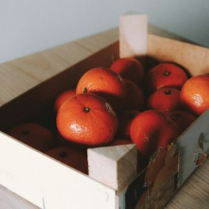

하우스 안 온도가 잘 유지돼서 실측 11.8Brix 나왔어요.
소비자 앱·생산자 앱 공용. 생산자 앱도 같은 글자 단계와 부품을 쓴다. 다른 점은 할 일 숫자 48, 주요 버튼 56, 목록 줄 최소 56뿐.
강조색은 화면당 주요 버튼 하나. 카드는 누르는 것만. 칩은 D-day·품절만. 같은 정보·사진은 한 화면에 한 번.


하우스 안 온도가 잘 유지돼서 실측 11.8Brix 나왔어요.